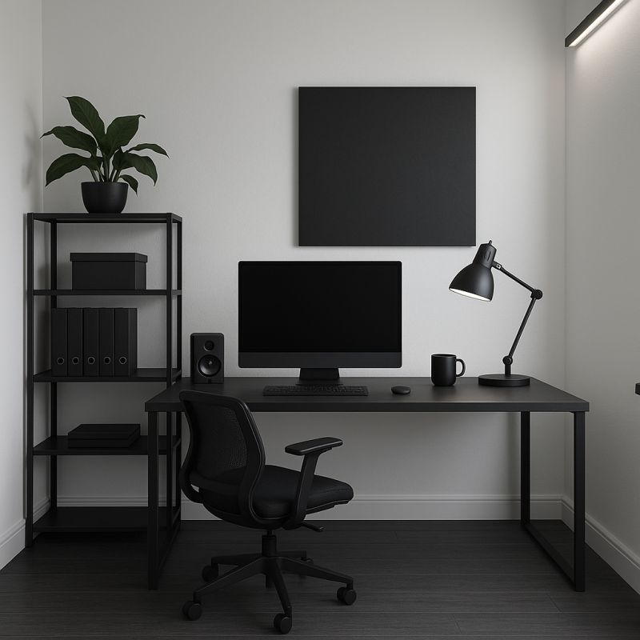

My Honest Take on Remote Work

Remote work changed my life — not in some "digital nomad" cliché way, but in a real, deeply personal one.
After almost 14 years living away from my family — in cities like Madrid and London — I finally managed to move back to Tenerife. Flights used to be so expensive that even visiting them for Christmas was tough. Now, I can have lunch with my parents on a random Tuesday if I want.
That alone makes remote work worth it.
But there's more. I can finish my workday and instantly see my daughter — no trains, no traffic, no 45-minute commutes. I can help my wife with daily things, actually cook for myself, and live instead of just surviving between office hours.
During this period, I also lost 35 kilos. Being at home gave me control: I could cook real food, eat mindfully, and stop depending on office meals that looked healthy but weren't.
My daughter now knows her grandparents and cousins — something that would've been impossible if we'd stayed abroad. We can go for walks, have proper family dinners, and yes, even go on the occasional date night with my wife (which used to be a logistical nightmare in London).
Financially, it also changed the game. I'm not paying London rent anymore, which means I don't need a London salary to live well. The pressure dropped massively. I can choose roles that give me better balance instead of chasing the next paycheck just to cover costs.
Honestly, a lot of this mindset shift started after reading The 4-Hour Workweek by Tim Ferriss years ago. It planted the seed that "a better life" isn't about earning more — it's about designing how you want to live. Remote work made that design possible for me.
Now, let's be honest — it's not all perfect.
After almost 20 years working in offices, there are things I still miss. I miss the laughs, the spontaneous coffee breaks, and the occasional in-person brainstorming that flows faster than any Zoom call ever could.
Sometimes it can get lonely. There are days when I'd love to have a quick chat or joke with a teammate face-to-face instead of through a screen.
The hybrid approach some companies promote could actually be great — if it wasn't imposed. I'd love the option to drop by the office when it feels right, not because it's mandatory. Last week I flew to London to visit my teammates, and that felt just right — good energy, real connections — then back home to my rhythm.
There's a balance somewhere in there.
But overall? After nearly two decades of office life, my personal take is simple: I truly, deeply love working remotely.
It gave me back my time, my health, and my family life — and I wouldn't trade that for anything.